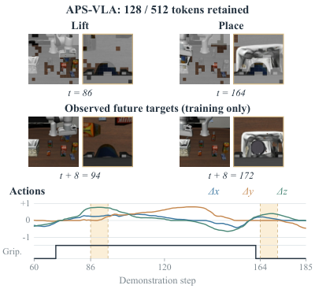
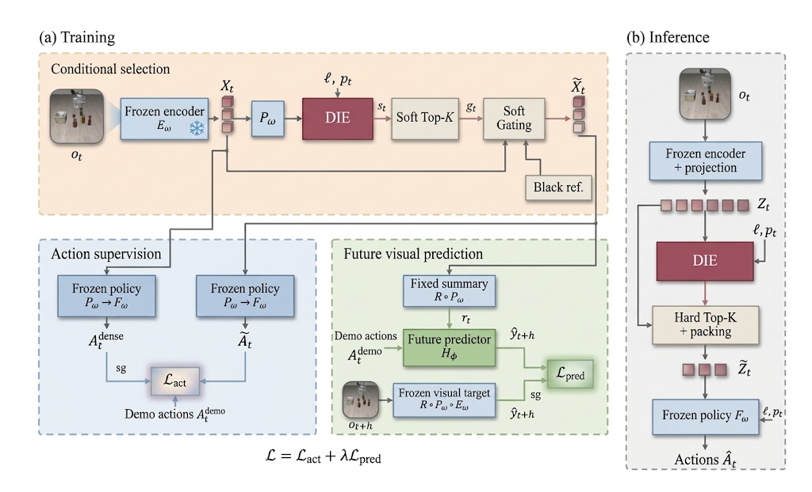
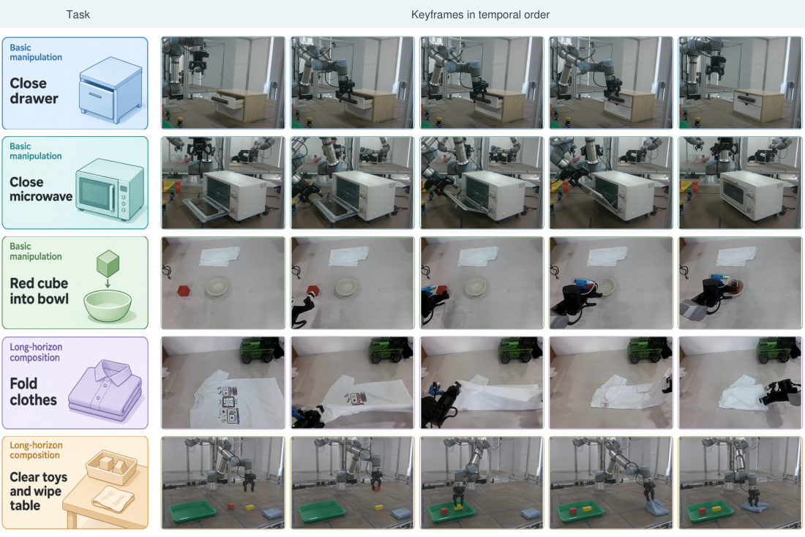

Contents · 7 sections
1Keep a quarter of the tokens and LIBERO runs 1.57x faster2The steps of one training pass and one deployment pass3Top-k has no gradient, so training uses soft gates4Matching the action is not enough; the selection must also help predict the scene 8 steps later5Success is not higher than older methods; the win is speed at similar success6Future-scene supervision adds about 1 point, and shuffled pairing raises action error7On real robots, 1.47x faster with success roughly unchangedSHARE
APS-VLA's pruner does not pick tokens from the current attention; it learns two things from demonstrations: what action was taken at this step, and what the scene looked like 8 steps later.
A VLA (vision-language-action model, which looks at camera images and an instruction and directly outputs robot-arm actions) looks at its camera images again at every control step. Each image is cut into small squares (patches), each patch becomes a visual token, and the tokens go into a large model together with the instruction and the robot state, which then outputs an action. OpenVLA-OFT uses two cameras and processes 512 visual tokens at every step. Yet the next action often depends on only a small part of the image, and the remaining tokens mostly slow inference down.
An illustrative example runs through this article: the instruction is "pick up the orange juice and put it in the basket". The difficulty is that the patches worth keeping keep changing. When lifting the can, the policy has to track where the can is relative to the gripper; when placing it, it has to find the basket opening. The instruction stays the same sentence from start to finish, but the region of the image that decides the action moves.
Existing pruning methods mostly rely on static spatial redundancy (for example, merging background patches that look alike), immediate instruction relevance (keeping patches related to the words in the instruction), or heuristic importance scores. None of these criteria directly targets the control-relevant cues that change as the task progresses. In the orange-juice example, the region worth keeping moves from the can and gripper to the basket opening between lifting and placing, and these criteria are not designed to follow that shift. The other route is to fine-tune the whole VLA backbone so it learns to work with fewer tokens, but that costs a lot of training compute and memory.
Keep a quarter of the tokens and LIBERO runs 1.57x faster
APS-VLA freezes the backbone entirely and trains only a small 256-dimensional scorer. The paper calls it DIE (Decision Influence Estimator); it gives each visual token a score for how much that patch matters to the next decision. At deployment, each step keeps the top k tokens per camera by score, packs them, and hands them to the original policy, which generates actions as usual.
On LIBERO (four suites of tabletop manipulation tasks), pruning OpenVLA-OFT from 512 tokens to 128 makes it 1.57x faster, while mean success drops from 97.00% to 95.75%. On real robots it is 1.47x faster, with success at 60.0% versus 61.0%. This means that after discarding three quarters of the visual tokens, the frozen policy still largely does its job, and what is saved is mainly latency.

The steps of one training pass and one deployment pass
The scorer sees demonstration data only during training. At deployment it sees only the current images, the instruction, and the robot state (proprioception, such as joint positions and gripper opening).
| Step | Input | Operation | Output | Training only? |
|---|---|---|---|---|
| 1 Score | All current visual tokens, instruction, proprioception | DIE scores every token | 512 scores | No |
| 2 Soft gating | Scores, per-camera budget | Turn scores into weights between 0 and 1 that sum to the budget per camera | Full token sequence with weights | Yes |
| 3 Action supervision | Weighted tokens | Run the frozen policy and compare with two action targets | Action loss | Yes |
| 4 Future-scene supervision | Weighted scene summary, demonstrated actions | A small prediction head predicts the scene summary 8 steps later | Prediction loss (weight 0.1) | Yes |
| 5 Hard selection | Scores | Take the top k per camera and pack in original order | Short sequence of 128 tokens | No (deployment only) |

Illustration: in the orange-juice example, the intermediate result DIE produces at one step is roughly a list like this. Each of the 256 patches from the external camera gets a score, and 64 are kept; the wrist camera also keeps 64. During lifting, the wrist-camera patches kept are mostly on the can body and near the gripper fingertips; during placing, they shift mostly to the basket rim and opening. The two lists, put back in their original positions, form the 128 tokens handed to the policy; the other 384 are simply dropped.
Top-k has no gradient, so training uses soft gates
Hard Top-k is "keep or drop", so gradients cannot flow back to the scorer. Training therefore uses soft gates: each token gets a weight between 0 and 1 that multiplies its features. The weight comes from the score minus a threshold, passed through the cumulative distribution function of a Laplace distribution; the threshold is solved per camera so that the weights in that camera sum exactly to the budget.
Illustration: a camera has only 4 patches and a budget of 2. After scoring, the weights might be 0.9, 0.8, 0.2, 0.1, which sum to exactly 2. The two highest-scoring patches are kept almost fully, and the other two keep only a little. As the temperature is lowered during training, the weights move closer to 1 and 0, looking more and more like the hard selection used at deployment. During training all 512 positions are still there, only weighted; only at deployment are 384 actually dropped and the rest packed. Hoot says

Training: soft gates
- Sequence length (illustrative)
- All 4 positions remain
- Each patch
- Features multiplied by its weight
- Weight sum
- 0.9+0.8+0.2+0.1 = 2, equal to the budget
- Gradient
- Flows back to the scorer through the weights
As temperature drops, weights approach 1 and 0, looking more like the right side
Deployment: hard Top-k + packing
- Sequence length (illustrative)
- Only A and B remain
- Each patch
- Kept ones unchanged; C and D dropped
- Real scale
- 384 of 512 dropped, 128 left
- Gradient
- Not needed: inference only
This step saves latency: the sequence really gets shorter
Illustrative: one camera with only 4 patches (A–D), budget 2, weights taken from the text's 0.9, 0.8, 0.2, 0.1. The real setting keeps 128 of 512 tokens.
Source
paper §3.1 (training keeps the full token layout for differentiation; deployment selects and packs); §3.3 (Laplace-CDF gates, per-budget threshold, annealed temperature); §3.4 (hard per-camera Top-k and packing at deployment)Matching the action is not enough; the selection must also help predict the scene 8 steps later
The first signal is the action. The weighted tokens go through the frozen policy, and its output must stay close to two targets at once: the action the same policy gives when it sees all 512 tokens (called the teacher action below), and the action recorded in the demonstration, weighted equally. Matching only the demonstrated action could pull the pruned policy away from the behavior it originally learned; matching only the teacher action would not anchor it to real operation. Gradients pass through the frozen policy and update only the scorer.
The action signal alone falls short. The authors' reason is that in long tasks or unseen task combinations, different interaction states often call for similar actions. Illustration: when the can has just left the table and when it is already hanging above the basket, the arm may be rising slowly in both cases. The action targets are nearly identical, so they cannot tell whether the scorer kept the basket-opening patches at that moment.
Hence the second signal: use the next 8 demonstrated actions plus the currently selected scene to predict what the scene looks like 8 steps later. The visual information the prediction head receives can only come from the selected current summary, and the error in predicting the future summary sends gradients back to the scorer. The authors intend this to make the scorer keep regions useful for later scene changes. Illustration: if the scorer drops the basket-opening patches, the prediction head still has the demonstrated actions, but guessing where the can ends up 8 steps later becomes harder.
The prediction target is not the full image but a small fixed summary. Within each camera, the projected visual tokens (not pixels) are grouped by position into a 2x2 grid of 4 cells and averaged within each cell; each cell is then compressed to 64 dimensions by a fixed Gaussian random projection and passed through a LayerNorm without learnable parameters. The current summary and the future target use the same fixed summary operator, which is not trained. With two cameras this gives a single vector of 2 x 4 x 64 = 512 dimensions. Illustration: in the orange-juice example, the summary 8 steps later roughly records a coarse layout such as "the can is now above the basket in the lower-left cell", with no need to reconstruct pixels.
One constraint is key here. The visual information the prediction head gets comes only from the gated current summary; the future scene serves only as a target and passes no gradient back. If the prediction head could see the full image, how well it predicts would have nothing to do with what the scorer selected, and the signal could not teach the scorer anything. The total loss adds the two, with the prediction term weighted 0.1:
At deployment, the prediction head is removed entirely, and no online prediction of future scenes is needed. Each step only adds DIE scoring, one Top-k per camera, and packing. Hoot says
Actual design: sees only the selected current summary
- Image input
- Gated current tokens, compressed to 512 dims by the fixed summary operator
- Other input
- The next 8 demonstrated actions
- Target
- The same summary of the scene 8 steps later, gradient-stopped
- Drop the basket-opening patches (illustrative)
- Harder to guess where the can lands, so error rises
- Where gradients go
- Prediction head → summary operator → gate weights → scorer
The error moves with the selection, so it sends gradients back to the scorer (weight 0.1)
What-if: the head sees the full image
- Image input
- All 512 tokens, ungated
- Other input
- The next 8 demonstrated actions
- Target
- Same as left
- Drop the basket-opening patches (illustrative)
- The head still sees them, so error is unchanged
- Where gradients go
- Trains only the head; the scorer gets nothing from this signal
However well it predicts, it says nothing about what the scorer chose
Left is APS-VLA's actual design; right is a what-if, not a method in the paper. Gradients from both signals update only the scorer and the prediction head: the frozen policy has no parameter updates but lets gradients pass; the fixed summary operator is not trained but also lets gradients pass; the future target is gradient-stopped and serves only as the answer.
Source
paper §3.2 (action supervision: gradients pass through the frozen policy to update only the selector; visual-transition supervision: fixed summary operator R, visual information reaches the predictor only through the gated current summary, future observations are detached targets); §4.1 (h=8, auxiliary weight 0.1)Success is not higher than older methods; the win is speed at similar success
The table below is the main LIBERO comparison. Latency is measured on a single A800 with batch size 1 and includes visual encoding, DIE, Top-k, packing, and full action generation.
| Method | Mean success | Latency (ms) | Speedup |
|---|---|---|---|
| OpenVLA-OFT unpruned | 97.00 | 107.95 | 1.00x |
| VLA-Cache | 96.63 | 92.60 | 1.17x |
| SAFE-Pruner | 96.40 | 73.30 | 1.47x |
| SpecPrune-VLA | 96.10 | 73.94 | 1.46x |
| VLA-ACL | 95.83 | 71.49 | 1.51x |
| VLA-ADP | 95.75 | 94.17 | 1.15x |
| APS-VLA keep 256 | 96.58 | 81.39 | 1.33x |
| APS-VLA keep 128 | 95.75 | 68.75 | 1.57x |
| APS-VLA keep 64 | 93.92 | 66.21 | 1.63x |
With 128 tokens kept, APS-VLA's success is lower than VLA-Cache, SAFE-Pruner, SpecPrune-VLA, and VLA-ACL, and equal to VLA-ADP. This shows that its advantage on LIBERO is not success rate but the lowest latency at similar success. The comparison conditions are also not fully aligned: APS-VLA and the unpruned baseline run on the authors' development evaluation set, the other methods' numbers come from their papers, and some latencies are estimates.
Pruning further to 64 tokens lowers latency only from 68.75 ms to 66.21 ms, while success falls to 93.92%. The authors' explanation is that beyond 75% pruning, the spatial cues needed for fine contact and multi-stage coordination start to be lost. Back in the orange-juice example (illustrative): with only 32 patches per camera, the few patches between the can and the fingertips during lifting may no longer fit.
RoboCasa365 is a longer kitchen simulation benchmark with task combinations, split into three groups: seen atomic tasks (A-S), seen composite tasks (C-S), and unseen composite tasks (C-U). With the XR-1 policy, APS-VLA is 1.52x faster on average and beats the strongest pruning baseline, VLA-ACL, by 3.00 and 1.64 points on the two composite groups. This means that on XR-1's two composite groups, APS-VLA loses less success after pruning than VLA-ACL does. The π0.5 policy itself reaches only 7.10% and 1.20% on the two composite groups, so differences in those cells are hard to interpret.
Future-scene supervision adds about 1 point, and shuffled pairing raises action error
In the ablation, A uses only the action signal and B adds future-scene supervision. Keeping 256, 128, and 64 tokens, B beats A by 1.41, 1.17, and 1.17 points. This shows that future-scene supervision gives a steady but small gain, in the same direction at all three budgets.
The authors also checked whether the future target must be correctly paired with the demonstration, using a control: future-scene targets are shuffled among different demonstrations of the same task, while actions and current scenes stay unchanged. On LIBERO-Long with 128 tokens kept and 2,000 training updates, the teacher-action L1 error is 0.011973 with aligned targets and 0.019251 with shuffled ones, so the aligned error is 37.8% lower. This shows that when future targets are correctly paired with the demonstration, the pruned teacher-action error is lower. Shuffling also swaps the trajectory and scene the target comes from, so this control cannot be attributed to temporal correspondence alone; it also compares only action error.
When the prediction-term weight varies from 0.03 to 0.3, mean success differs by at most 1.67 points, with 0.1 best. This means the weight is not very sensitive in this range and needs no fine tuning.
On real robots, 1.47x faster with success roughly unchanged
The real-robot experiments use two dual-arm platforms, each with three cameras, on 5 tasks: close a drawer, close a microwave, put a red cube into a bowl, fold clothes, and clear toys then wipe the table. APS-VLA and the unpruned baseline use the same task-fine-tuned π0.5 checkpoint, with 40 trials per task each.

Latency drops on all five tasks, with speedups between 1.44x and 1.51x. Per-task success goes both ways: close drawer 80.0 to 82.5, close microwave 75.0 to 72.5, clear toys and wipe table 35.0 to 40.0, and the other two unchanged. With 40 trials per task, 2.5 points is a single trial, so these small swings are within sampling error. This shows that pruning did not make the real-robot tasks noticeably worse, but it is not grounds for saying it improved success.
Back to the orange-juice can. APS-VLA does not guess where the model is looking in this frame; it lets demonstrations tell the scorer that the patches kept while lifting must be enough to reproduce the action, and that the same patches must also be used to predict the scene summary 8 steps later. On LIBERO this training buys the fastest tier at similar success; on real robots it buys roughly half again the speed with success unchanged.
How did this read for you?
Hoot made a note. Thanks for the feedback.
One tap, no sign-in; tap again to undo. Only anonymous counts are kept, never who you are.
Discussion
Add experiment details, reproduction notes or a different take. Requires a GitHub sign-in.
Loading the discussion…